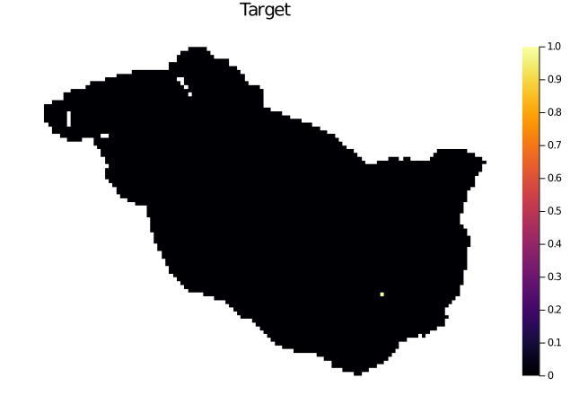
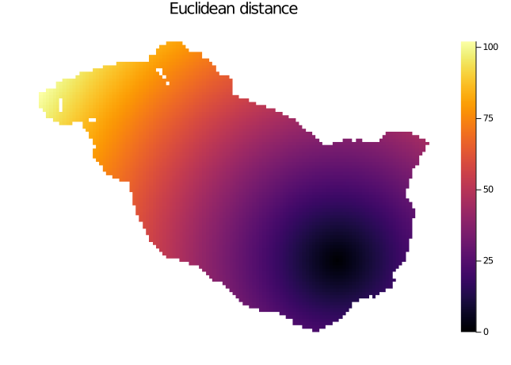
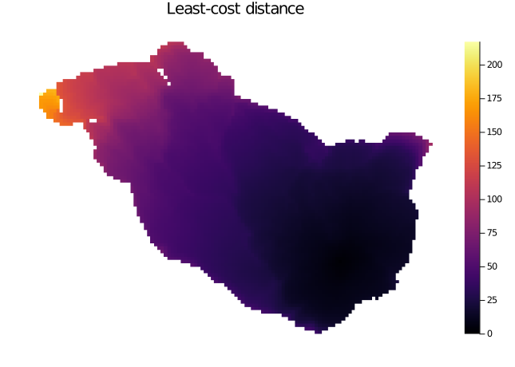
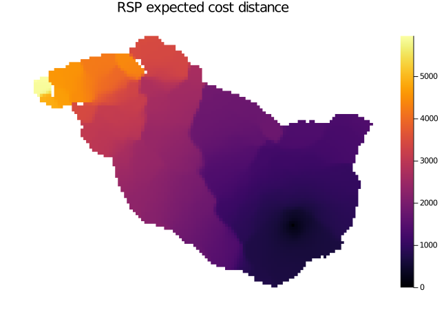
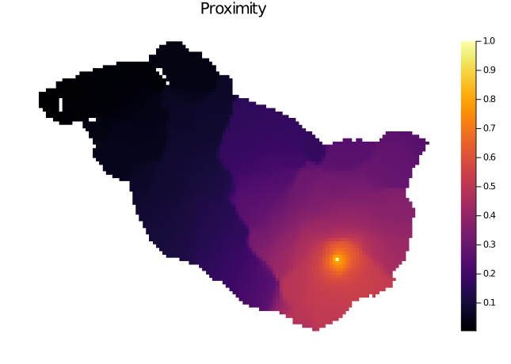
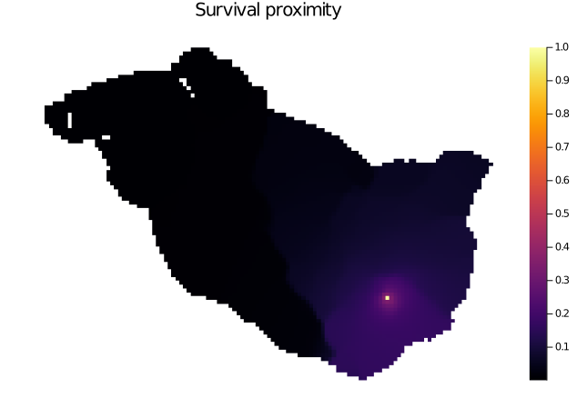

#using Pkg
#Pkg.activate(joinpath(ENV["HOME"], ".julia", "dev", "ConScape"))
using ConScape
using SparseArrays
using Statistics
using PlotsEcological distance
Here you will learn
Different ecological distance and proximity metrics implemented in ConScape.
Demonstration of distance and proximity metrics
In this notebook we demonstrate different types of distances and proximities that can be used in ConScape to quantify the connectivity between source and target pixels.
Data import, Grid and GridRSP creation
See notebook Getting Started for a ‘basic workflow’ to learn about the fundamentals on data import and the creation of a ConScape Grid:
datadir = joinpath(ENV["HOME"], "Downloads", "input_maps")
outdir = joinpath(ENV["TMPDIR"], "figures")
if !isdir(outdir)
mkdir(outdir)
end"C:/Users/bram.van.moorter/Documents/ConScape_website/site/notebooks/data/"mov_prob, meta_p = ConScape.readasc(joinpath(datadir, "mov_prob_1000.asc"))
hab_qual, meta_q = ConScape.readasc(joinpath(datadir, "hab_qual_1000.asc"))([NaN NaN … NaN NaN; NaN NaN … NaN NaN; … ; NaN NaN … NaN NaN; NaN NaN … NaN NaN], Dict{Any, Any}("cellsize" => 1000.0, "nrows" => 87, "nodata_value" => -9999, "ncols" => 117, "xllcorner" => 110650.0, "yllcorner" => 6.89575e6))non_matches = findall(xor.(isnan.(mov_prob), isnan.(hab_qual)))
mov_prob[non_matches] .= 1e-20
hab_qual[non_matches] .= 1e-20;θ = 0.001
adjacency_matrix = ConScape.graph_matrix_from_raster(mov_prob)
g = ConScape.Grid(size(mov_prob)...,
affinities=adjacency_matrix,
qualities=hab_qual,
costs=ConScape.mapnz(x -> -log(x), adjacency_matrix))
h = ConScape.GridRSP(g, θ = θ);┌ Info: cost graph contains 4835 strongly connected subgraphs
└ @ ConScape C:\Users\bram.van.moorter\.julia\packages\ConScape\spkWs\src\grid.jl:215┌ Info: removing 4834 nodes from affinity and cost graphs
└ @ ConScape C:\Users\bram.van.moorter\.julia\packages\ConScape\spkWs\src\grid.jl:225Euclidean distance
Compute the Euclidean distance between all pairs of source and target pixels:
euclid = [hypot(xy_i[1] - xy_j[1], xy_i[2] - xy_j[2]) for xy_i in
g.id_to_grid_coordinate_list, xy_j in g.id_to_grid_coordinate_list]5345×5345 Matrix{Float64}:
0.0 1.0 2.0 … 116.108 116.25 116.966
1.0 0.0 1.0 115.974 116.108 116.842
2.0 1.0 0.0 115.849 115.974 116.726
3.0 2.0 1.0 115.732 115.849 116.619
4.0 3.0 2.0 115.624 115.732 116.52
1.0 1.41421 2.23607 … 115.117 115.261 115.974
1.41421 1.0 1.41421 114.983 115.117 115.849
2.23607 1.41421 1.0 114.856 114.983 115.732
3.16228 2.23607 1.41421 114.739 114.856 115.624
4.12311 3.16228 2.23607 114.63 114.739 115.525
5.09902 4.12311 3.16228 … 114.529 114.63 115.434
2.23607 2.82843 3.60555 114.272 114.425 115.117
2.0 2.23607 2.82843 114.127 114.272 114.983
⋮ ⋱
114.756 114.586 114.425 4.47214 3.60555 5.83095
114.935 114.756 114.586 5.38516 4.47214 6.7082
114.856 114.739 114.63 … 2.23607 3.16228 2.23607
114.983 114.856 114.739 1.41421 2.23607 2.0
115.117 114.983 114.856 1.0 1.41421 2.23607
115.261 115.117 114.983 1.41421 1.0 2.82843
115.412 115.261 115.117 2.23607 1.41421 3.60555
115.849 115.732 115.624 … 2.0 3.0 1.41421
115.974 115.849 115.732 1.0 2.0 1.0
116.108 115.974 115.849 0.0 1.0 1.41421
116.25 116.108 115.974 1.0 0.0 2.23607
116.966 116.842 116.726 1.41421 2.23607 0.0The distance from all source pixels to a given target pixel (e.g. pixel 4300):
tmp = zeros(5345)
tmp[4300] = 1
display(ConScape.plot_values(g, tmp, title="Target"))
display(ConScape.plot_values(g, euclid[:,4300], title="Euclidean distance"))

Euclidean distance to target t.
Least-cost distance
From the Grid we can also compute the least-cost distances betweem \(s\) and \(t\):
lcps = ConScape.least_cost_distance(g)5345×5345 Matrix{Float64}:
0.0 46.0517 92.1034 95.6402 … 324.669 324.322 340.565
46.0517 0.0 46.0517 49.5885 278.617 278.271 294.513
92.1034 46.0517 0.0 46.0517 275.774 275.427 291.669
95.6402 49.5885 46.0517 0.0 275.427 275.08 291.323
97.6873 51.6356 48.792 46.0517 275.33 274.983 291.226
46.0517 46.3983 53.9123 54.2589 … 283.288 282.941 299.183
46.3983 46.0517 46.3983 49.2419 278.271 277.924 294.166
49.2419 3.19019 2.84362 3.19019 232.219 231.872 248.115
51.2891 5.23737 2.39375 2.04718 229.375 229.029 245.271
53.5857 7.53404 4.69042 2.64324 229.278 228.932 245.174
99.6374 53.5857 50.7421 48.6949 … 273.38 273.033 289.276
50.8639 15.963 15.6164 15.963 244.992 244.645 260.888
49.6884 11.4973 11.1507 11.4973 240.526 240.179 256.422
⋮ ⋱
264.586 218.534 215.69 215.344 49.5023 38.1418 66.2053
264.13 218.079 215.235 214.888 60.135 49.1979 76.838
282.906 236.854 234.011 233.664 … 26.2618 38.6569 28.6819
278.796 232.744 229.901 229.554 13.129 26.5877 28.4995
278.631 232.579 229.735 229.389 13.4586 13.8052 29.5223
278.271 232.219 229.375 229.029 13.7918 13.4452 30.4948
278.915 232.863 230.02 229.673 27.5348 14.0896 44.2379
294.345 248.293 245.45 245.103 … 28.6782 42.1369 15.5492
294.513 248.461 245.618 245.271 15.7171 29.8689 15.7171
294.974 248.922 246.078 245.732 0.0 16.3565 16.703
293.405 247.354 244.51 244.164 15.1349 0.0 31.8379
311.506 265.455 262.611 262.265 17.3399 33.6964 0.0The least-cost distance from all source pixels to target pixel 4300 is:
ConScape.plot_values(g, lcps[4300,:], title="Least-cost distance")
Not too surprising there is a high, albeit imperfect, correlation between the Euclidean and least-cost distance:
cor(euclid[:,4300], lcps[4300,:])0.9523159537210744RSP expected cost distance
The randomized shortest path (RSP) expected cost distance is the expected cost of moving from the source to the target following the RSP distribution:
dists = ConScape.expected_cost(h);The RSP expected cost from all pixels as sources to target pixel 4300:
ConScape.plot_values(g, dists[:,4300], title="RSP expected cost distance")
Comparing the least-cost distance to the RSP expected cost distance we see there is strong positive relationship:
cor(lcps[:,4300], dists[:,4300])0.9413616748832977Most computations in ConScape require a proximity instead of a distance. A proximity is a metric from zero to one, with zero no connectivity and one perfect connectivity between a source and a target. Different transformations can be used for this, a common choice is the exponential transformation with a scaling factor (here: 1000) representing the movement capabilities of a species (see (Moorter et al. 2021) for a discussion):
ConScape.plot_values(g, map(x -> exp(-x/1000), dists[:,4300]), title="Proximity")
Survival probability
(Fletcher Jr et al. 2019) introduced the use of the ‘absorbing Markov chain’ or ‘killed random walk’ to connectivity modeling in landscape ecology (see also: (Moorter et al. 2021)). The RSP framework uses the same formalism and can be considered a generalization of the absorbing Markov chain in ((Fletcher Jr et al. 2019)) with the introduction of the \(\theta\) paramter, see ((Moorter et al. 2021)) for discussion. Here we show ConScape’s functionality to use the survival probability from source to target as a proximtiy metric:
surv_prob = ConScape.survival_probability(h);
ConScape.plot_values(g, surv_prob[:,4300], title="Survival proximity")
The proximity based on the expected cost and on the survival probability show a strong positive relationship:
cor(map(x -> exp(-x/1000), dists[:,4300]), surv_prob[:,4300])0.948207086404158For more discussion on the use of the survival probability, in the context of the RSP framework we refer to ((Moorter et al. 2021)) and more specifically in the context of ConScape to Notebook dispersal mortality.
Summary
In ConScape different metrics are available to characterize the connectivity between source and target pixels. The metric that is most appropriate will depend upon the ecological application. (Moorter et al. 2021) suggest the use of the RSP expected cost for applications modeling individuals that move with knowledge of their landscape, whereas the survival probability is probably a more appropriate model for dispersing individuals experiencing mortality ((Fletcher Jr et al. 2019) for this last type of applications).
References
Fletcher Jr, Robert J, Jorge A Sefair, Chao Wang, Caroline L Poli, Thomas AH Smith, Emilio M Bruna, Robert D Holt, Michael Barfield, Andrew J Marx, and Miguel A Acevedo. 2019. “Towards a Unified Framework for Connectivity That Disentangles Movement and Mortality in Space and Time.” Ecology Letters 22 (10): 1680–89.
Moorter, Bram van, Ilkka Kivimäki, Manuela Panzacchi, and Marco Saerens. 2021. “Defining and Quantifying Effective Connectivity of Landscapes for Species’ Movements.” Ecography 44 (6): 870–84.